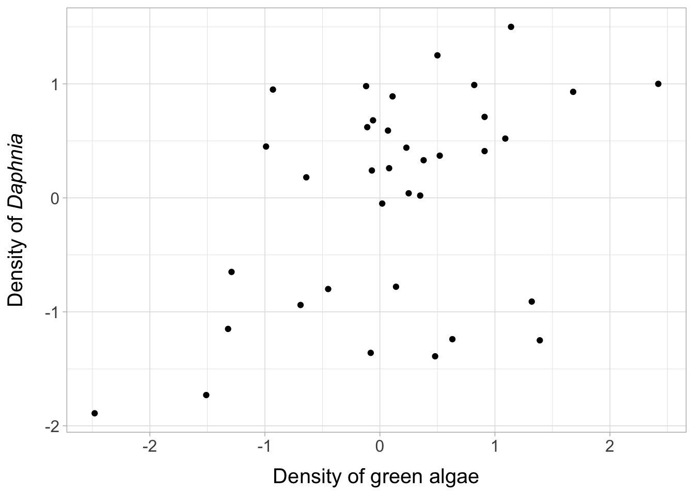

HW2: Linear Models
Link to original assignment PDF
Background
The goal of this assignment is to familiarize yourself with fitting linear models in R. We will be working some data from nearby Lake Washington that is part of a long-term monitoring program begun in the 1960s by the late, and rather famous, Dr. W.T. Edmondson and since continued by Dr. Daniel Schindler. The accompanying data file L_Washington_plankton.csv contains information on the following four variables:
Daphnia: index of the density of the cladoceran Daphnia (unitless)Greens: index of the density of green algae (unitless)Cyclops: index of the density of the copepod Cyclops (unitless)Temp: water temperature (°C)
Daphnia are an effective grazer on phytoplankton and green algae make up a large proportion of their diet. Cyclops are an inferior grazer compared to Daphnia, but a competitor nonetheless. Daphnia growth rates are also affected by water temperature.
Question 1
- Write out the equation for a linear regression model that expresses Daphnia abundance as a function of its preferred prey, green algae, and describe the terms in your model.
\[y_i =\beta_0 + \beta_1 x_i+e_i \] Each observation of Daphnia abundance \((y_i)\) is a function of an intercept \((\beta_0)\) and the effect \((\beta_1)\) of green algae density \((x_i)\). The model residuals are assumed to be independent and normally distributed with mean 0 and variance \(\sigma^2\), such that \(e_i \sim \mathrm{N}(0, \sigma^2)\).
- Produce a scatterplot that shows the relationship between
DaphniaandGreens. Make sure to label your plot accordingly and give it an informative caption. Describe the relationship betweenDaphniaandGreens. Does a linear model seem reasonable here?
There seems to be a weak positive relationship between green algae and Daphnia density that could be approximated with a linear model.
- Produce the step-by-step R code required to fit your model via linear algebra to generate estimates the model parameters and the data. Be sure to show the construction of the design matrix \((\mathbf{X})\), the calculation of the parameter estimates \((\hat{\beta_i})\), the calculation of the hat matrix \((\mathbf{H})\), and the calculation of the model predictions \((\hat{y_i})\).
First, we construct the design matrix:
nn <- nrow(daph)
yy <- matrix(data=daph$Daphnia, nrow = nn, ncol = 1)
head(yy) [,1]
[1,] -1.15
[2,] -1.73
[3,] -1.89
[4,] -0.94
[5,] -0.05
[6,] 0.99intercept <- rep(1, nn)
greens <- daph$Greens
XX <- cbind(intercept, greens)
head(XX) intercept greens
[1,] 1 -1.32
[2,] 1 -1.51
[3,] 1 -2.48
[4,] 1 -0.69
[5,] 1 0.02
[6,] 1 0.82Using the design matrix, we can find the parameter estimates \((\hat{\beta_i})\) using the following formula: \[ \hat{\boldsymbol{\beta}} = (\mathbf{X}^{\top} \mathbf{X})^{-1} \mathbf{X}^{\top} \mathbf{y}. \]
beta_hat <- solve(t(XX) %*% XX) %*% t(XX) %*% yy # or solve(crossprod(XX,XX),crossprod(XX,yy))
beta_hat [,1]
intercept -0.04914691
greens 0.42112528#check answer
daph_mod <- lm(data=daph, Daphnia~Greens)
tidy(daph_mod) %>% select(c(term, estimate))| term | estimate |
|---|---|
| (Intercept) | -0.0491469 |
| Greens | 0.4211253 |
Now we find the hat matrix \((\mathbf{H})\):
## hat matrix
HH <- XX %*% solve(t(XX) %*% XX) %*% t(XX)
dim(HH)[1] 36 36# Check answer
hat_auto <- optR::hatMatrix(XX)
all.equal(HH, hat_auto)[1] TRUEFinally, we find the model predictions \((\hat{y_i})\):
y_hat <- HH %*% yy
#or
y_hat <- XX %*% beta_hat
# alternative built-in methods
predict(daph_mod) 1 2 3 4 5 6
-0.605032288 -0.685046093 -1.093537619 -0.339723359 -0.040724407 0.296175821
7 8 9 10 11 12
0.969976277 -0.095470694 -0.318667095 0.098246938 0.409879648 0.009810628
13 14 15 16 17 18
-0.082836935 0.216162017 0.506738464 0.536217234 0.056134409 -0.002823131
19 20 21 22 23 24
0.658343567 0.047711903 -0.015456889 -0.019668142 -0.074414429 -0.466060944
25 26 27 28 29 30
0.152993225 -0.592398530 -0.238653290 -0.440793427 0.430935913 0.161415730
31 32 33 34 35 36
0.334077097 0.110880696 0.169838236 -0.099681946 0.334077097 -0.078625682 head(broom::augment(daph_mod)) # see fitted column| Daphnia | Greens | .fitted | .resid | .hat | .sigma | .cooksd | .std.resid |
|---|---|---|---|---|---|---|---|
| -1.15 | -1.32 | -0.6050323 | -0.5449677 | 0.0916530 | 0.8569811 | 0.0228327 | -0.6727384 |
| -1.73 | -1.51 | -0.6850461 | -1.0449539 | 0.1094821 | 0.8409326 | 0.1043338 | -1.3027983 |
| -1.89 | -2.48 | -1.0935376 | -0.7964624 | 0.2346629 | 0.8480611 | 0.1758904 | -1.0711252 |
| -0.94 | -0.69 | -0.3397234 | -0.6002766 | 0.0482177 | 0.8560678 | 0.0132742 | -0.7239090 |
| -0.05 | 0.02 | -0.0407244 | -0.0092756 | 0.0281488 | 0.8627408 | 0.0000018 | -0.0110699 |
| 0.99 | 0.82 | 0.2961758 | 0.6938242 | 0.0422076 | 0.8538700 | 0.0153292 | 0.8340942 |
- Calculate and report your estimate of the residual variance \((\sigma^2)\).
We can use the following formula: \[\sigma^2 = \frac{\mathrm{RSS}}{n-p}, \quad\text{where}\] \[\mathrm{RSS}= \mathbf{e^\top}\mathbf{e}=\left(\mathbf{y}-X\hat{\beta}\right)^\top\left(\mathbf{y}-X\hat{\beta}\right)\]
rss <- as.numeric(crossprod(yy-XX %*% beta_hat) )
rss[1] 24.56271# check answer
all.equal(rss, deviance(daph_mod))[1] TRUEsigma2 <- rss/(nn-2)
sigma2[1] 0.7224325# check answer
all.equal(sigma2, sigma(daph_mod)^2)[1] TRUE- Give a prediction of what you might expect the specific abundance of Daphnia to be on the next sampling occasion if the abundance of green algae is 1.5 units. Also provide an estimate of the interval around your estimate that conveys 95% confidence in your prediction. Again, do so via direct calculations rather than relying on R’s built-in functions.
First, we use the \(\beta_0\) and \(\beta_1\) values we found above to estimate \(y\) when \(x=1.5\).
# y = b_0 + b_1 * x
y_star <- unname(beta_hat[1,1])+unname(beta_hat[2,1])*1.5
y_star[1] 0.582541#OR
#vector of new data
X_star <- c(intercept = 1, greens = 1.5)
sum(X_star * beta_hat)[1] 0.582541Now we need to find the standard error of our estimate
## inside sqrt
inner_X <- t(X_star) %*% solve(t(XX) %*% XX) %*% X_star
## critical t-value
t_crit <- qt(0.975, df = nn-2)
## estimated SD
sigma <- sqrt(sigma2)
## 95% CI
y_star + c(-1,1) * t_crit * sigma * c(sqrt(inner_X))[1] 0.07980506 1.08527698# for prediction interval,
inner_X_pred <- 1+ t(X_star) %*% solve(t(XX) %*% XX) %*% X_star
y_star + c(-1,1) * t_crit * sigma * c(sqrt(inner_X_pred))[1] -1.216459 2.381541Now let’s check our answer using the built-in functions in R
predict(daph_mod, new = data.frame(Greens=1.5),
level = 0.95, interval = "confidence") fit lwr upr
1 0.582541 0.07980506 1.085277predict(daph_mod, new = data.frame(Greens=1.5),
level = 0.95, interval = "pred") fit lwr upr
1 0.582541 -1.216459 2.381541Question 2
- Expand upon your model from Question 1 to include the additional effects of Cyclops and water temperature on Daphnia. Write out your equation and describe the terms in the model.
\[y_i =\beta_0 + \beta_1 x_{1,i}+\beta_2 x_{2,i}+\beta_3 x_{3,i}+e_i \] Each observation of Daphnia abundance \((y_i)\) is a function of an intercept \((\beta_0)\), the effect \((\beta_1)\) of green algae density \((x_{1,i})\), the effect \((\beta_2)\) of Cyclops density \((x_{2,i})\), and the effect \((\beta_3)\) of water temperature \((x_{3,i})\). The model residuals are again assumed to be independent and normally distributed with mean 0 and variance \(\sigma^2\), such that \(e_i \sim \mathrm{N}(0, \sigma^2)\).
- Using R’s built-in functions, fit the model from (a) and show the resulting table of results. For each of the \(p\)-values shown in the table, describe the null hypothesis being tested.
daphmod_full <- lm(Daphnia ~ Greens + Cyclops + Temp, data=daph)
sumary(daphmod_full) Estimate Std. Error t value Pr(>|t|)
(Intercept) -4.143339 0.650218 -6.3722 3.711e-07
Greens 0.046216 0.099249 0.4657 0.6446140
Cyclops 0.278715 0.075458 3.6936 0.0008212
Temp 0.291675 0.045371 6.4286 3.157e-07
n = 36, p = 4, Residual SE = 0.50245, R-Squared = 0.73The first \(p\)-value corresponds to a t-test that the intercept is 0, \(H_0: \beta_0=0\). The remaining three \(p\)-values shown in the table correspond to null hypothesis tests that the given predictor can be dropped from the model.
For example, can Cyclops be dropped from this model? We fit a reduced model and compare to it to the full model via an \(F\)-test with \(H_0: \beta_\text{cyclops} = 0\)
\[ \begin{aligned} \Theta: \text{Daphnia}_i &= \beta_0 + \beta_1 \text{Greens}_i + \beta_2 \text{Cyclops}_i + \beta_3 \text{Temp}_i + e_i \\ ~ \\ \theta: \text{Daphnia}_i &= \beta_0 + \beta_1 \text{Greens}_i + \beta_2 \text{Temp}_i + e_i \end{aligned} \]
## reduced model without `Cyclops`
reduced_mod <- lm(Daphnia ~ Greens + Temp, data=daph)
## use `anova('reduced', 'full')` to get the F-test results
anova(reduced_mod, daphmod_full)| Res.Df | RSS | Df | Sum of Sq | F | Pr(>F) |
|---|---|---|---|---|---|
| 33 | 11.522716 | NA | NA | NA | NA |
| 32 | 8.078507 | 1 | 3.444209 | 13.64295 | 0.0008212 |
We see that the resulting p-value is the same as the one displayed for the Cyclops estimate in the summary table for the full model.
- Test the hypothesis that \(\beta_{Greens} = \beta_{Cyclops} = \beta_{Temp} = 0\). What is the \(F\)-statistic, the associated \(df\), and the \(p\)-value? What can you conclude from this test?
We write the null hypothesis as \[H_0: \beta_1 = \beta_2 = \beta_3 = 0\] which corresponds to a model where we simply estimate the data based on their mean.
\[\begin{align*} \Theta: \mathbf{y} &= \mathbf{X} \boldsymbol{\beta} + \mathbf{e} \\ \theta: \mathbf{y} &= \boldsymbol{\mu} + \mathbf{e} \\ \end{align*}\]
We will base this test on an \(F\)-distribution, such that
\[\begin{align*} SSE_{\Theta} &= \left( \mathbf{y} - \mathbf{X} \boldsymbol{\beta} \right)^{\top} \left( \mathbf{y} - \mathbf{X} \boldsymbol{\beta} \right) = \mathbf{e}^{\top} \mathbf{e} = SSE \\ SSE_{\theta} &= \left( \mathbf{y} - \bar{y} \right)^{\top} \left( \mathbf{y} - \bar{y} \right) = SSTO \\ &\Downarrow \\ F &= \frac{ \left( SSTO - SSE \right) / (k - 1) } { SSE / (n - k)} \end{align*}\]
\(F\)-test by hand
## get matrix of predictors
XX <- daph %>% select(-Daphnia) %>% add_column(Intercept=1, .before = "Temp") %>% as.matrix()
## estimate beta
beta_hat <- solve(t(XX) %*% XX) %*% t(XX) %*% yy
## total sum of squares
SSE <- t(yy - XX %*% beta_hat) %*% (yy - XX %*% beta_hat)
## error sum of squares
SSTO <- t(yy - mean(yy)) %*% (yy - mean(yy))
## F statistic
(F_stat <- ((SSTO - SSE) / (4 - 1)) / (SSE / (nn - 4))) [,1]
[1,] 29.47894## F test
pf(F_stat, 4-1, nn-4, lower.tail = F) [,1]
[1,] 2.467335e-09This \(F\)-statistic is quite large and the \(p\)-value is very small, so we would reject the null hypothesis that we would be justified in dropping the 3 predictors from this model in favor of a mean-only model.
Checking using the built-in summary function, we see that the F-statistic and p-value reported at the bottom of the output are the same as our manually calculated values.
summary(daphmod_full)
Call:
lm(formula = Daphnia ~ Greens + Cyclops + Temp, data = daph)
Residuals:
Min 1Q Median 3Q Max
-0.74029 -0.41712 -0.04736 0.27781 1.16894
Coefficients:
Estimate Std. Error t value Pr(>|t|)
(Intercept) -4.14334 0.65022 -6.372 3.71e-07 ***
Greens 0.04622 0.09925 0.466 0.644614
Cyclops 0.27871 0.07546 3.694 0.000821 ***
Temp 0.29168 0.04537 6.429 3.16e-07 ***
---
Signif. codes: 0 '***' 0.001 '**' 0.01 '*' 0.05 '.' 0.1 ' ' 1
Residual standard error: 0.5024 on 32 degrees of freedom
Multiple R-squared: 0.7343, Adjusted R-squared: 0.7094
F-statistic: 29.48 on 3 and 32 DF, p-value: 2.467e-09- It has come to your attention that someone has done lab experiments suggesting the effect of temperature on Daphnia abundance is 0.4 per degree Celsius after controlling for the effects of prey (green algae) and competitors (Cyclops). Create a null hypothesis test to evaluate the evidence for this finding from the data collected in the field. Specify \(H_0\) and report the results of your test. What do you conclude?
\[ \text{Daphnia}_i = \beta_0 + \beta_1 \text{Greens}_i + \beta_2 \text{Cyclops}_i + 0.4* \text{Temp}_i + e_i \]
We write the null hypothesis as \[H_0: \beta_{\text{temp}} = 0.4\]
## model with effect of `elevation` = 1
fixed_mod <- lm(Daphnia ~ Greens + Cyclops + offset(0.4 * Temp), data=daph)
## use `anova('comb', 'full')` to get the F-test results
anova(fixed_mod, daphmod_full)| Res.Df | RSS | Df | Sum of Sq | F | Pr(>F) |
|---|---|---|---|---|---|
| 33 | 9.517552 | NA | NA | NA | NA |
| 32 | 8.078507 | 1 | 1.439045 | 5.700241 | 0.0230387 |
We have found significant evidence to reject \(H_0\), suggesting that it may be worthwhile to re-run the lab experiments demonstrating the effect of temperature on Daphnia abundance is 0.4/°C after controlling for green algae and Cyclops density and determine if the findings can be replicated.